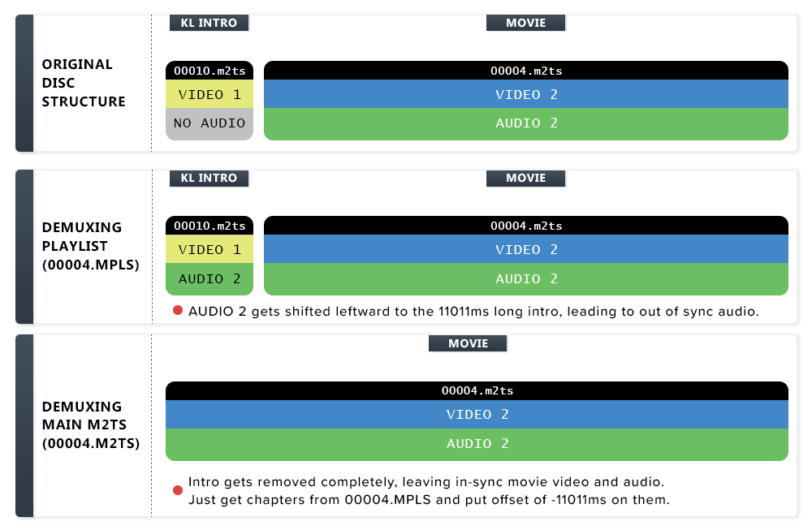

How to demux Kino Lorber Blu-ray Discs properly#
 Introduction to the problem:#
Introduction to the problem:#
Most Kino Lorber blu-ray discs need a special technique to demux the streams properly.
Many distributors insert a few seconds long intro before the movie starts. This intro contains their logo and company name. However, Kino Lorber does it in a unique way unlike any other distributor, where their intro is silent and there is no audio track.
Due to this, when you demux these discs, the audio of the main movie gets shifted earlier to the start of the intro. The same thing happens to the subtitles. The result is that you end up with a file which is now out of sync with both the audio and the subtitles.
How to identify if the disc needs special demuxing:#
Not every Kino Lorber disc is authored in this way. Some do not have the intro. For instance, their "Kino Classics" line of releases are generally not authored in this way (or perhaps never).
You need the special demux technique only if the disc has this 11 second intro before the movie.
The length of the intro is always 264 frames, which at 23.976 FPS (or 24000/1001 FPS) is 11011ms.
Use BDInfo, eac3to or mediainfo to see the contents of the main playlist on the disc.
Load the folder in the BDInfo application. If there is an 11 second file above the main movie m2ts, that is the intro.
Same thing can be done with the FULL (unabridged) BDInfo text output. This output is produced by both the regular BDInfo program and the CLI versions.
The full output contains the list of the files that the playlist is made up of. Again, look for an 11 second long file above the main movie.
Look for the highlighted line in the below output:
DISC INFO:
Disc Title: Sample Disc
Disc Label: Sample Disc
Disc Size: 20,000,000,000 bytes
Protection: AACS
BDInfo: 0.7.5.5
PLAYLIST REPORT:
Name: 00004.MPLS
Length: 1:10:00.000 (h:m:s.ms)
Size: 20,000,000,000 bytes
Total Bitrate: 25.00 Mbps
VIDEO:
Codec Bitrate Description
----- ------- -----------
MPEG-4 AVC Video 20000 kbps 1080p / 23.976 fps / 16:9 / High Profile 4.1
AUDIO:
Codec Language Bitrate Description
----- -------- ------- -----------
DTS-HD Master Audio English 1800 kbps 2.0 / 48 kHz / 1800 kbps / 16-bit (DTS Core: 2.0 / 48 kHz / 1509 kbps / 16-bit)
Dolby Digital Audio English 192 kbps 2.0 / 48 kHz / 192 kbps / DN -31dB
SUBTITLES:
Codec Language Bitrate Description
----- -------- ------- -----------
Presentation Graphics English 25.000 kbps
FILES:
Name Time In Length Size Total Bitrate
---- ------- ------ ---- -------------
00010.M2TS 0:00:00.000 0:00:11.010 712,704 518
00004.M2TS 0:00:11.010 1:10:00.000 20,000,000,000 20,000
00000.M2TS 1:10:00.000 0:00:01.000 18,432 147
CHAPTERS:
Number Time In Length Avg Video Rate Max 1-Sec Rate Max 1-Sec Time Max 5-Sec Rate Max 5-Sec Time Max 10Sec Rate Max 10Sec Time Avg Frame Size Max Frame Size Max Frame Time
------ ------- ------ -------------- -------------- -------------- -------------- -------------- -------------- -------------- -------------- -------------- --------------
1 0:00:00.000 0:07:39.709 29,137 kbps 60,233 kbps 00:00:10.343 34,685 kbps 00:00:10.093 33,485 kbps 00:03:51.231 151,895 bytes 613,283 bytes 00:06:25.051
2 0:07:39.709 0:06:54.789 30,063 kbps 41,644 kbps 00:14:02.925 34,095 kbps 00:11:06.916 33,755 kbps 00:11:06.916 156,737 bytes 675,345 bytes 00:14:02.967
3 0:14:34.498 0:07:53.890 30,089 kbps 37,004 kbps 00:18:54.883 33,587 kbps 00:15:44.693 32,952 kbps 00:15:44.693 156,872 bytes 422,172 bytes 00:18:54.925
4 0:22:28.388 0:07:00.545 29,334 kbps 47,682 kbps 00:27:30.231 38,843 kbps 00:25:39.162 34,737 kbps 00:25:38.912 152,935 bytes 624,995 bytes 00:27:30.315
5 0:29:28.933 0:06:27.637 30,166 kbps 36,439 kbps 00:30:50.431 33,026 kbps 00:34:24.645 32,391 kbps 00:34:22.268 157,271 bytes 396,522 bytes 00:30:50.640
6 0:35:56.571 0:07:52.805 30,292 kbps 38,355 kbps 00:42:52.486 35,655 kbps 00:42:51.485 33,487 kbps 00:42:51.485 157,926 bytes 479,900 bytes 00:40:42.231
7 0:43:49.376 0:07:36.789 30,358 kbps 39,036 kbps 00:46:58.482 32,797 kbps 00:47:11.912 32,490 kbps 00:48:19.354 158,272 bytes 676,452 bytes 00:46:58.524
8 0:51:26.166 0:08:54.408 30,503 kbps 37,811 kbps 00:52:38.113 33,426 kbps 00:58:40.767 32,757 kbps 00:58:37.931 159,029 bytes 539,954 bytes 00:52:38.154
9 1:00:20.575 0:08:01.230 30,299 kbps 42,081 kbps 01:05:12.408 35,423 kbps 01:05:12.241 33,165 kbps 01:05:12.241 157,963 bytes 636,342 bytes 01:05:13.284
10 1:08:21.806 0:05:39.964 30,188 kbps 40,834 kbps 01:12:30.095 35,139 kbps 01:11:19.984 34,075 kbps 01:11:18.732 157,388 bytes 495,962 bytes 01:12:30.137
11 1:14:01.770 0:06:33.810 30,253 kbps 38,705 kbps 01:16:32.129 33,608 kbps 01:20:24.152 32,719 kbps 01:20:24.152 157,725 bytes 512,938 bytes 01:16:32.170
12 1:20:35.580 0:07:34.328 17,366 kbps 42,406 kbps 01:21:03.733 35,693 kbps 01:21:00.856 34,043 kbps 01:20:55.767 90,545 bytes 663,919 bytes 01:23:01.434
STREAM DIAGNOSTICS:
File PID Type Codec Language Seconds Bitrate Bytes Packets
---- --- ---- ----- -------- -------------- -------------- ------------- -----
00004.M2TS 4113 (0x1011) 0x1B AVC 1000.000 28,978 19,161,368,201 104,211,710
00004.M2TS 4352 (0x1100) 0x80 LPCM eng (English) 1000.000 2,311 1,527,788,100 8,464,200
00004.M2TS 4353 (0x1101) 0x86 DTS-HD MA eng (English) 1000.000 3,441 2,275,063,288 12,878,129
00004.M2TS 4354 (0x1102) 0x80 LPCM eng (English) 1000.000 2,310 1,527,232,160 8,461,120
00004.M2TS 4355 (0x1103) 0x80 LPCM eng (English) 1000.000 2,311 1,527,798,208 8,464,256
00004.M2TS 4356 (0x1104) 0x80 LPCM eng (English) 1000.000 2,311 1,527,798,208 8,464,256
00004.M2TS 4608 (0x1200) 0x90 PGS eng (English) 1000.000 40 26,238,832 151,220
First scan the folder with eac3to.
D:\>eac3to "Sample Disc"
1) 00004.mpls, 00010.m2ts+00004.m2ts+00000.m2ts, 1:10:00
- Chapters, 12 chapters
- h264/AVC, 1080p24 /1.001 (16:9)
That output means the main playlist 00004.mpls is made up of three m2ts files: 00010 + 00004 + 00000, totaling a duration of 1:10:00.
00004.m2ts in a Kino Lorber disc is almost always the main movie. Since we see a different file: 00010.m2ts before it, it's a good indicator that it's the intro.
To confirm whether it's the intro, we can look up the info of 00010.m2ts using eac3to:
D:\>eac3to "Sample Disc\BDMV\STREAM\00010.m2ts"
M2TS, 1 video track, 0:00:11, 24p /1.001
1: h264/AVC, 1080p24 /1.001 (16:9)
That output confirms that the duration of 00010.m2ts is 0:00:11, or 11 seconds.
Another interesting confirmation from that output is that 00010.m2ts has only an h264 video stream. There is no other stream, like audio or subtitle.
Of course, you can also just play 00010.m2ts in a media player, or take its mediainfo, to check if it is 11 seconds long.
This is not widely known, but mediainfo can also show you the different m2ts files that a blu-ray playlist is made up of.
Command: mediainfo ~/bdfolder/BDMV/PLAYLIST/00004.mpls > output.txt
The full path of the mpls file must be used to get the proper output.
Going to the PLAYLIST folder and using just the filename, like mediainfo 00004.mpls, produces an incomplete output.
Mediainfo of a Kino Lorber disc's main playlist:
1 2 3 4 5 6 7 8 9 10 11 12 13 14 15 16 17 18 19 20 21 22 23 24 25 26 27 28 29 30 31 32 33 34 35 36 37 38 39 40 41 42 43 44 45 46 47 48 49 50 51 52 53 54 55 56 57 58 59 60 61 62 63 64 65 66 67 68 69 70 71 72 73 74 75 76 77 78 79 80 81 82 83 84 85 86 87 88 89 90 91 92 93 94 95 96 97 98 99 100 101 102 103 104 105 106 107 108 109 110 111 112 113 114 115 116 117 118 119 120 121 122 123 124 125 126 127 128 129 130 131 132 133 134 135 136 137 138 139 140 141 142 143 144 145 146 147 148 149 150 151 152 153 154 155 156 157 158 159 160 | |
The above output shows that the playlist 00004.mpls consists of 00010.m2ts of 11s11ms length + 00004.m2ts of 1h10m length + 00000.m2ts of 1s1ms length.
Sidenote: Taking advanced mediainfo using mediainfo -f ~/bdfolder/BDMV/PLAYLIST/00004.mpls > output.txt will show you this pertinent line under the info of 00010.m2ts:
Frame count : 264
How to demux properly:#
There are two methods to get a properly playable file from such discs.
The easier option is to demux 00004.m2ts instead of the playlist. This method removes the intro completely. If you go this route, only the chapters will need to be manually adjusted.
The other option is to demux the playlist as usual. This will keep the intro intact, so you need to apply a delay of 11011ms to the audio and subtitles.
-
Demuxing the m2ts method:#
-
Video & Audio: Use your preferred demuxing tool to demux
00004.m2tsdirectly.If you use eac3to, the command will be
eac3to "Sample Disc\BDMV\STREAM\00004.m2ts" -demux.You can also drag and drop
00004.m2tsin MKVToolnix GUI. -
Chapters: The above commands will give you everything except the chapters. You need to get the chapters from the playlist.
-
Extracting chapters: In eac3to, do either
eac3to "Sample Disc" 1) 1:chapters.txtoreac3to "Sample Disc\BDMV\PLAYLIST\00004.mpls" 1:chapters.txt.Or in MKVToolnix GUI, switch to the
Chapter editortab, and drag and drop the file00004.mplsfrom the folderBDMV\PLAYLIST. -
Adjusting chapters: The same
Chapter editorin MKVToolnix GUI can be used to adjust the timings of the chapters. Open the chapter file in there, right click onEdition entryand click onAdditional modifications. Check the first field calledShift start and end timestampsand enter the value-00:00:11.011in the box.Visual Animated Guide for adjusting the chapters: Click here
-
-
-
Demuxing the playlist method:#
Demux the usual way with
eac3to "Sample Disc" 1) -demux.Then apply a delay to the audio(s) and subtitle(s).
eac3to can be used for this.
- Audio:
eac3to input.dtsma output.dtsma +11011ms - Subtitles:
eac3to input.sup output.sup +11011ms.
Chapters do not need any adjustment if you demuxed the playlist.
Alternatively, you can instead set a delay of 11011ms in MKVToolnix when muxing the file. Of course don't apply the delay in both eac3to and MKVToolnix at the same time.
- Audio:
{kind=link}
Regardless of which method you used, always play the final file in a media player and check if everything is in sync.
For encoders:#
If you downloaded a remux that is already out of sync by 11 seconds, and want to encode it, you can just trim the first 264 frames of the video in your script. If you go this route, you should not need to do any modification to the audio and subtitles.
- AviSynth:
Trim(264, 0) - VapourSynth:
core.std.Trim(src, first=264)ORsrc = src[264:]
Remember that frames in AviSynth and VapourSynth start from 0 and not 1.
To verify if you cut the intro properly, enable showing the frame info of your trimmed video using MyLWLInfo() / LWLInfo() / awf.FrameInfo(). If the first frame is an I-frame, the cutting was done correctly.
Graphic to summarize the problem:#
